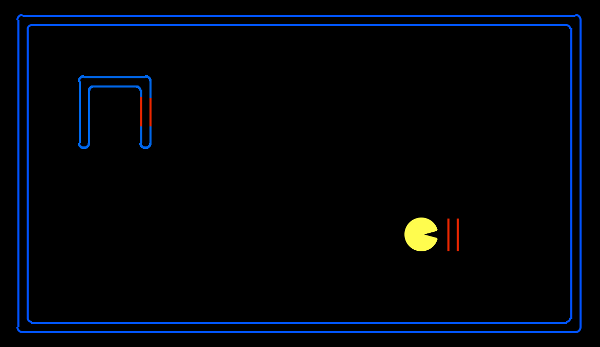
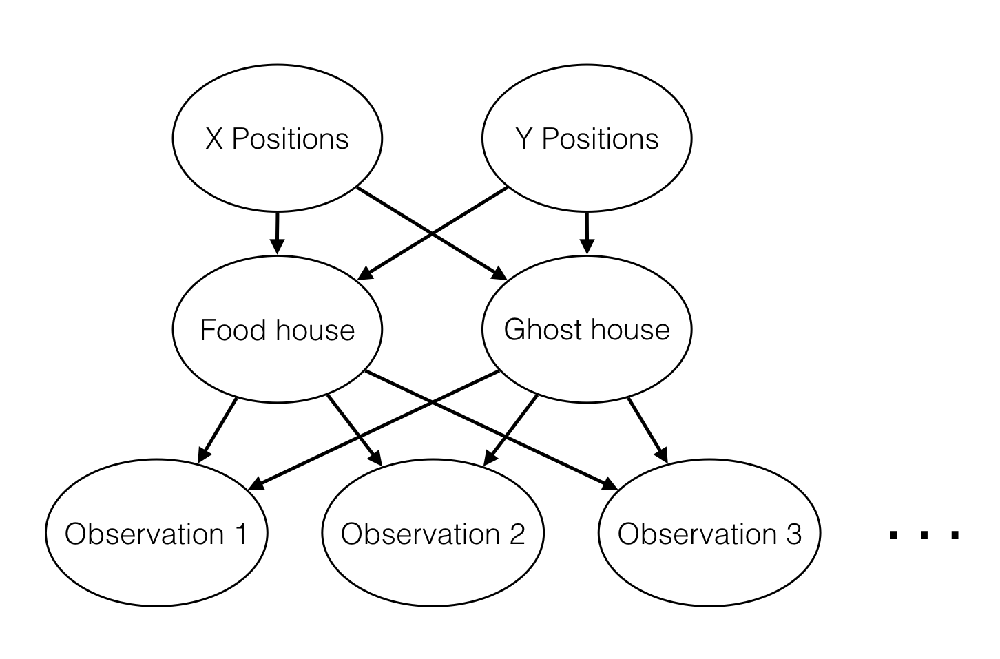

Due: Friday 4/2 at 11:59pm

And now, after such a pompous poem, let's dig into our project.
In this project, you will implement inference algorithms for Bayes Nets, specifically variable elimination and value-of-perfect-information computations. These inference algorithms will allow you to reason about the existence of invisible pellets and ghosts.
You can run the autograder for particular tests by commands of the form:
python autograder.py -t test_cases/q4/1-simple-eliminate
The code for this project contains the following files, available as a zip archive.
| Files you'll edit: | |
factorOperations.py |
Operations on Factors (join, eliminate, normalize). |
inference.py |
Inference algorithms (enumeration, variable elimination, likelihood weighting). |
bayesAgents.py |
Pacman agents that reason under uncertainty. |
| Files you should read but NOT edit: | |
bayesNet.py |
The BayesNet and Factor classes. |
| Files you can ignore: | |
graphicsDisplay.py |
Graphics for Pacman |
graphicsUtils.py |
Support for Pacman graphics |
textDisplay.py |
ASCII graphics for Pacman |
ghostAgents.py |
Agents to control ghosts |
keyboardAgents.py |
Keyboard interfaces to control Pacman |
layout.py |
Code for reading layout files and storing their contents |
autograder.py |
Project autograder |
testParser.py |
Parses autograder test and solution files |
testClasses.py |
General autograding test classes |
test_cases/ |
Directory containing the test cases for each question |
bayesNets2TestClasses.py |
Project 4 specific autograding test classes |
Files to Edit and Submit: You will fill in portions of factorOperations.py, inference.py, and bayesAgents.py during the assignment. Once you have completed the assignment, you will submit a token generated by submission_autograder.py. Please do not change the other files in this distribution or submit any of our original files other than this file.
Evaluation: Your code will be autograded for technical correctness. Please do not change the names of any provided functions or classes within the code, or you will wreak havoc on the autograder. However, the correctness of your implementation – not the autograder’s judgements – will be the final judge of your score. If necessary, we will review and grade assignments individually to ensure that you receive due credit for your work.
Academic Dishonesty: We will be checking your code against other submissions in the class for logical redundancy. If you copy someone else’s code and submit it with minor changes, we will know. These cheat detectors are quite hard to fool, so please don’t try. We trust you all to submit your own work only; please don’t let us down. If you do, we will pursue the strongest consequences available to us.
Getting Help: You are not alone! If you find yourself stuck on something, contact the course staff for help. Office hours, section, and the discussion forum are there for your support; please use them. If you can’t make our office hours, let us know and we will schedule more. We want these projects to be rewarding and instructional, not frustrating and demoralizing. But, we don’t know when or how to help unless you ask.
Discussion: Please be careful not to post spoilers.
Pacman has entered a world of mystery. Initially, the entire map is invisible. As he explores it, he learns information about neighboring cells. The map contains two houses: a ghost house, which is probably mostly red, and a food house, which is probably mostly blue. Pacman's goal is to enter the food house while avoiding the ghost house.
Pacman will reason about which house is which based on his observations, and reason about the tradeoff between taking a chance or gathering more evidence. To enable this, you'll implement probabilistic inference using Bayes nets.
To play for yourself, run:
python hunters.py -p KeyboardAgent -r
First, take a look at bayesNet.py to see the classes you'll be working with - BayesNet and Factor. You can also run this file to see an example BayesNet and associated Factors: python bayesNet.py
You should look at the printStarterBayesNet function - there are helpful comments that can make your life much easier later on.
The Bayes Net created in this function is shown below:
(Raining --> Traffic <-- Ballgame)
A summary of the terminology is given below:
Bayes Net: This is a representation of a probabilistic model as a directed acyclic graph and a set of conditional probability tables, one for each variable, as shown in lecture. The Traffic Bayes Net above is an example.Factor: This stores a table of probabilities, although the sum of the entries in the table is not necessarily 1. A factor is of the general form $P(X_1, ... X_m, y_1, ..., y_n | Z_1, ..., Z_p, w_1, ..., w_q)$. Recall that lower case variables have already been assigned. For each possible assignment of values to the $X_i$ and $Z_j$ variables, the factor stores a single number. The $Z_j, w_k$ variables are said to be conditioned while the $X_i, y_l$ variables are unconditioned.The Traffic Bayes Net stores the following CPTs: $P(Raining)$, $P(Ballgame)$, $P(Traffic|Ballgame, Raining)$.
Implement the constructBayesNet function in BayesAgents.py. It constructs an empty Bayes net with the structure described below. (We'll specify the actual factors in the next question.)
The treasure hunting world is generated according to the following Bayes net:

Don't worry if this looks complicated! We'll take it step by step. As described in the code for constructBayesNet, we build the empty structure by listing all of the variables, their values, and the edges between them. This figure shows the variables and the edges, but what about their values?
Grading: To test and debug your code, run
python autograder.py -q q1Implement the fillYCPT function in bayesAgents.py. These take the Bayes net you constructed in the previous problem, and specify the factors governing the Y position variables. (We've already filled in the X position, house, and observation factors for you.)
Here's the structure of the Bayes net again:
For an example of how to construct factors, look at the implementation of the factor for X positions in fillXCPT.
The Y positions are given by values BOTH_TOP_VAL, BOTH_BOTTOM_VAL, LEFT_TOP_VAL, LEFT_BOTTOM_VAL. These variables, and their associated probabilities PROB_BOTH_TOP, PROB_BOTH_BOTTOM, PROB_ONLY_LEFT_TOP, PROB_ONLY_LEFT_BOTTOM, are provided by constants at the top of the file.
If you're interested, you can look at the computation for house positions. All you need to remember is that each house can be in one of four positions: top-left, top-right, bottom-left, or bottom-right.
Hint: There are only four entries in the Y position factor, so you can specify each of those by hand.
Grading: To test and debug your code, run
python autograder.py -q q2
Implement the joinFactors function in factorOperations.py. It takes in a list of Factors and returns a new Factor whose probability entries are the product of the corresponding rows of the input Factors.
joinFactors can be used as the product rule, for example, if we have a factor of the form $P(X|Y)$ and another factor of the form $P(Y)$, then joining these factors will yield $P(X,Y)$. So, joinFactors allows us to incorporate probabilities for conditioned variables (in this case, Y). However, you should not assume that joinFactors is called on probability tables -- it is possible to call joinFactors on Factorswhose rows do not sum to 1.
Grading: To test and debug your code, run
python autograder.py -q q3
It may be useful to run specific tests during debugging, to see only one set of factors print out. For example, to only run the first test, run:
python autograder.py -t test_cases/q3/1-product-ruleHints and Observations:
joinFactors should return a new Factor.joinFactors can do:
joinFactors operation, which variables are unconditioned in the returned Factor? Which variables are conditioned?variableDomainsDict, which maps each variable to a list of values that it can take on (its domain). A Factor gets its variableDomainsDict from the BayesNet from which it was instantiated. As a result, it contains all the variables of the BayesNet, not only the unconditioned and conditioned variables used in the Factor. For this problem, you may assume that all the input Factors have come from the same BayesNet, and so their variableDomainsDicts are all the same.Implement the eliminate function in factorOperations.py. It takes a Factor and a variable to eliminate and returns a new Factor that does not contain that variable. This corresponds to summing all of the entries in the Factor which only differ in the value of the variable being eliminated.
Grading: To test and debug your code, run
python autograder.py -q q4
It may be useful to run specific tests during debugging, to see only one set of factors print out. For example, to only run the first test, run:
python autograder.py -t test_cases/q4/1-simple-eliminateHints and Observations:
eliminate should return a new Factor.eliminate can be used to marginalize variables from probability tables. For example:
Factors store the variableDomainsDict of the original BayesNet, and not only the unconditioned and conditioned variables that they use. As a result, the returned Factor should have the same variableDomainsDict as the input Factor.Implement the normalize function in factorOperations.py. It takes a Factor as input and normalizes it, that is, it scales all of the entries in the Factor such that the sum of the entries in the Factor is 1. If the sum of probabilities in the input factor is 0, you should return None.
Grading: To test and debug your code, run
python autograder.py -q q5
It may be useful to run specific tests during debugging, to see only one set of factors print out. For example, to only run the first test, run:
python autograder.py -t test_cases/q5/1-preNormalizedHints and Observations:
normalize should return a new Factor.normalize does not affect probability distributions (since probability distributions must already sum to 1).normalize operation, which variables are unconditioned in the returned Factor? Which variables are conditioned? Make sure to read the docstring of normalize for more instructions. In particular, pay attention to the treatment of unconditioned variables with exactly one entry in their domain.Factors store the variableDomainsDict of the original BayesNet, and not only the unconditioned and conditioned variables that they use. As a result, the returned Factor should have the same variableDomainsDict as the input Factor.Implement the inferenceByVariableElimination function in inference.py. It answers a probabilistic query, which is represented using a BayesNet, a list of query variables, and the evidence.
Grading: To test and debug your code, run
python autograder.py -q q6
It may be useful to run specific tests during debugging, to see only one set of factors print out. For example, to only run the first test, run:
python autograder.py -t test_cases/q6/1-disconnected-eliminateHints and Observations:
inferenceByEnumeration function in inference.py for an example on how to use the desired functions. (Reminder: Inference by enumeration first joins over all the variables and then eliminates all the hidden variables. In contrast, variable elimination interleaves join and eliminate by iterating over all the hidden variables and perform a join and eliminate on a single hidden variable before moving on to the next hidden variable.)Inside bayesAgents.py, use the inference.inferenceByVariableElimination function you just wrote to complete the function getMostLikelyFoodHousePosition. This function should compute the marginal distribution over positions of the food house, then return the most likely position. The return value should be a dictionary containing a single key-value pair, {FOOD_HOUSE_VAR: best_house_val}, where best_house_val is the most likely position from HOUSE_VALS. This is used by Bayesian Pacman, who wanders around randomly collecting information for a fixed number of timesteps, then heads directly to the house most likely to contain food.
Grading: To test and debug your code, run
python autograder.py -q q7
Hint: You may find Factor.getProbability(...) and Factor.getAllPossibleAssignmentDicts(...) to be useful.
Bayesian Pacman spends a lot of time wandering around randomly, even when further exploration doesn't provide any additional value. Can we do something smarter?
We'll evaluate VPI Pacman in a more restricted setting: everything in the world has been observed, except for the colors of one of the houses' walls. VPI Pacman has three choices:
First look at computeEnterValues. This function computes the expected value of entering the top left and top right houses. Again, you can run the inference function you already wrote, on the bayes net self.BayesNet to do all the heavy lifting here. First compute p(foodHouse = topLeft and ghostHouse = topRight | evidence) and p(foodHouse = topRight and ghostHouse = topLeft | evidence). Then use these two probabilities to compute expected rewards for entering the top left or top right houses. Use WON_GAME_REWARD and GHOST_COLLISION_REWARD as the reward for entering the foodHouse and ghostHouse, respectively.
Next look at computeExploreValue. This function computes the expected value of exploring all of the hidden cells, and then making a decision. We've provided a helper method, getExplorationProbsAndOutcomes, which returns a list of future observations Pacman might make, and the probability of each. To calculate the value of the extra information Pacman will gain, you can use the following formula:
$E[\text{value of exploration}] = \sum p(\text{evidence}) \max_{\text{actions}} E[\text{value of action} | \text{evidence}]$
Note that $E[\text{value of action} | \text{evidence}]$ is exactly the quantity computed by computeEnterVals, so to compute the value of exploration, you can call computeEnterValues again with the hypothetical evidence provided by getExplorationProbsAndOutcomes.
Grading: To test and debug your code, run
python autograder.py -q q8
Hint:
After exploring, Pacman will again need to compute the expected value of entering the left and right houses. Fortunately, you've already written a function to do this! Your solution to computeExploreValue can rely on your solution to computeEnterValues to determine the value of future observations.
In order to submit your project, run python submission_autograder.py and submit the generated token file bayesnet.token to the Project 4 assignment on Gradescope.